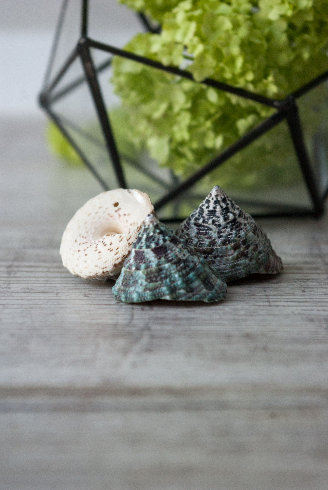
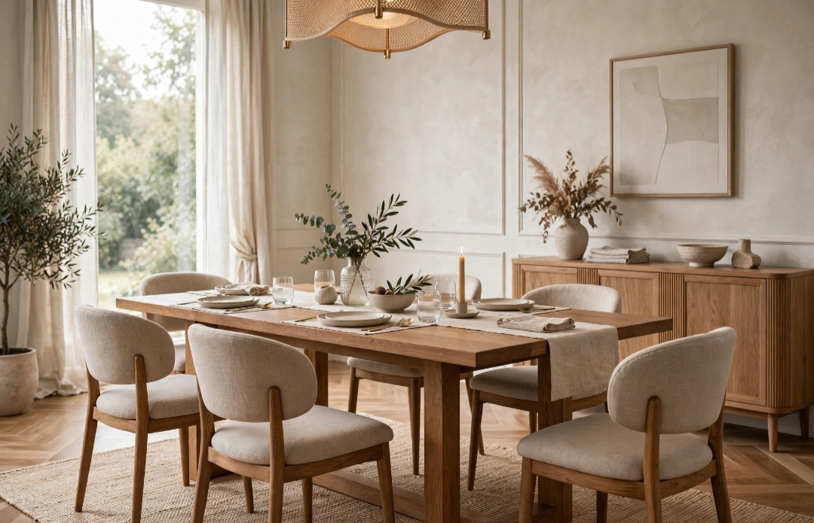

En este artículo
Introducción
Guía práctica sobre cómo elegir iluminación para una terraza cómoda y segura con criterios de proporción, funcionalidad, mantenimiento y decoración para tomar decisiones más acertadas en casa.
Tomar una buena decisión empieza por observar el espacio real, sus medidas, la luz disponible y la forma en que se utiliza cada día. Esta guía desarrolla los criterios principales para elegir con más seguridad y evitar cambios innecesarios.
Define las zonas que necesitan luz
Divide la terraza según actividades: acceso, mesa, descanso, escalones y vegetación. Cada zona necesita una intensidad diferente y no todo el espacio debe quedar iluminado por igual.
Antes de comprar o modificar nada, mide y observa el espacio durante varios momentos del día. La luz natural, los recorridos y los hábitos cotidianos ofrecen información que una fotografía no muestra. Anota las necesidades principales y ordénalas por importancia.
Trabajar por etapas reduce errores. Resuelve primero función y seguridad; después color, textura y detalles. Una vez realizado un cambio importante, úsalo durante varios días antes de añadir otra cosa. Así resulta más fácil identificar qué mejora realmente el ambiente.
Una decisión acertada debe relacionarse con el resto del ambiente. Observa materiales, colores, dimensiones y elementos que permanecerán. No hace falta que todo coincida exactamente: repetir uno o dos rasgos crea una relación suficiente y evita un resultado rígido.
Prueba siempre que sea posible antes de comprometerte. Muestras, plantillas de papel, cinta en el suelo o una configuración temporal permiten comprobar proporciones y comodidad. Esta fase de prueba suele evitar devoluciones y trabajos innecesarios.
Finalmente, piensa en cómo cambiará la solución con el tiempo. La luz, las estaciones, el desgaste y las necesidades de la familia pueden modificar la forma de utilizar el espacio. Elegir con cierto margen de adaptación hace que el resultado dure más.
Prioriza seguridad y equipos de exterior
Utiliza luminarias y conexiones aptas para exterior y para el grado de exposición real. Agua, humedad y polvo exigen productos adecuados e instalaciones seguras.
El presupuesto también forma parte del proyecto. Establece una cantidad máxima y prioriza elementos que se utilizan a diario. Varias compras pequeñas realizadas por impulso pueden costar más que una solución duradera y adecuada.
Reutilizar lo existente es una herramienta válida. Cambiar una pieza de lugar, limpiar, reparar o combinarla de otra manera puede transformar el resultado sin aumentar la cantidad de objetos. La decoración más coherente no siempre es la que incorpora más novedades.
Una decisión acertada debe relacionarse con el resto del ambiente. Observa materiales, colores, dimensiones y elementos que permanecerán. No hace falta que todo coincida exactamente: repetir uno o dos rasgos crea una relación suficiente y evita un resultado rígido.
Prueba siempre que sea posible antes de comprometerte. Muestras, plantillas de papel, cinta en el suelo o una configuración temporal permiten comprobar proporciones y comodidad. Esta fase de prueba suele evitar devoluciones y trabajos innecesarios.

Finalmente, piensa en cómo cambiará la solución con el tiempo. La luz, las estaciones, el desgaste y las necesidades de la familia pueden modificar la forma de utilizar el espacio. Elegir con cierto margen de adaptación hace que el resultado dure más.
Crea ambiente con varias fuentes
Apliques, balizas y luces suaves pueden crear profundidad sin convertir la terraza en un espacio excesivamente brillante. Evita orientar fuentes directamente hacia los ojos o viviendas vecinas.
Piensa desde el principio en el mantenimiento. Revisa instrucciones del fabricante, limpieza, resistencia y vida útil. Una solución que exige cuidados incompatibles con tu rutina terminará deteriorándose o siendo reemplazada antes de tiempo.
La seguridad debe mantenerse por encima de la estética. Instalaciones eléctricas, fijaciones, elementos pesados y productos técnicos requieren sistemas apropiados. Cuando el trabajo supera una intervención decorativa sencilla, recurre a un profesional cualificado.
Una decisión acertada debe relacionarse con el resto del ambiente. Observa materiales, colores, dimensiones y elementos que permanecerán. No hace falta que todo coincida exactamente: repetir uno o dos rasgos crea una relación suficiente y evita un resultado rígido.
Prueba siempre que sea posible antes de comprometerte. Muestras, plantillas de papel, cinta en el suelo o una configuración temporal permiten comprobar proporciones y comodidad. Esta fase de prueba suele evitar devoluciones y trabajos innecesarios.
Finalmente, piensa en cómo cambiará la solución con el tiempo. La luz, las estaciones, el desgaste y las necesidades de la familia pueden modificar la forma de utilizar el espacio. Elegir con cierto margen de adaptación hace que el resultado dure más.
Controla consumo y mantenimiento
LED, temporizadores y sensores pueden reducir consumo cuando se utilizan correctamente. Mantén luminarias limpias y revisa fijaciones y cableado de forma periódica.
Mantén una jerarquía visual. Elige uno o dos elementos protagonistas y deja que los demás acompañen. Repetir un material, tono o acabado en pequeñas dosis crea continuidad sin necesidad de utilizar conjuntos idénticos.
Al terminar, fotografía el espacio desde los puntos principales. Si algo domina demasiado, interrumpe el paso o parece innecesario, retíralo temporalmente. Editar es tan importante como añadir.
Una decisión acertada debe relacionarse con el resto del ambiente. Observa materiales, colores, dimensiones y elementos que permanecerán. No hace falta que todo coincida exactamente: repetir uno o dos rasgos crea una relación suficiente y evita un resultado rígido.
Prueba siempre que sea posible antes de comprometerte. Muestras, plantillas de papel, cinta en el suelo o una configuración temporal permiten comprobar proporciones y comodidad. Esta fase de prueba suele evitar devoluciones y trabajos innecesarios.
Finalmente, piensa en cómo cambiará la solución con el tiempo. La luz, las estaciones, el desgaste y las necesidades de la familia pueden modificar la forma de utilizar el espacio. Elegir con cierto margen de adaptación hace que el resultado dure más.

Plan práctico antes de decidir
Haz una lista con las condiciones que la solución debe cumplir y separa necesidades de preferencias. Las necesidades son aquellas que afectan a uso, seguridad o mantenimiento; las preferencias pueden ajustarse según presupuesto y estilo.
Compara al menos dos alternativas y revisa medidas, materiales, instalación y cuidado. Si existe una muestra o posibilidad de prueba, utilízala. Las decisiones tomadas con información concreta suelen mantenerse mejor que las basadas únicamente en una imagen.
Después de instalar o aplicar el cambio, evita seguir comprando inmediatamente. Utiliza el espacio durante una semana, detecta si falta algo y completa únicamente lo necesario. Este método ayuda a conservar equilibrio y presupuesto.
Protección frente a agua, humedad y polvo
Una luminaria exterior debe estar diseñada para las condiciones concretas de instalación. No recibe la misma exposición un aplique bajo un techo que una baliza junto a una zona abierta a lluvia. Revisa la clasificación de protección indicada por el fabricante y asegúrate de que sea adecuada para el lugar.
Las conexiones, transformadores y accesorios también necesitan protección. Utilizar una luminaria apta para exterior no compensa una conexión improvisada. La instalación eléctrica debe cumplir las normas aplicables y mantenerse fuera de situaciones de riesgo.
Después de tormentas o temporadas de mucha humedad, revisa fijaciones, juntas y signos de corrosión. Si observas daños, desconecta el sistema y solicita revisión profesional antes de seguir utilizándolo.
Iluminar sin molestar a vecinos ni perder el cielo nocturno
Más luz no significa mejor terraza. Orientar las luminarias hacia las superficies que necesitas permite utilizar menos potencia y reducir deslumbramiento. Evita focos que apunten directamente hacia ventanas vecinas o hacia el cielo.
Las fuentes bajas y protegidas pueden marcar recorridos sin inundar todo el espacio. Para vegetación, una iluminación selectiva suele resultar más elegante que iluminar cada planta. El contraste moderado crea profundidad y conserva una atmósfera nocturna.
Apaga las luces cuando la terraza no esté en uso. Temporizadores y sensores pueden ayudar, siempre que su configuración no provoque encendidos innecesarios por movimiento fuera de la propiedad.
Escalones, accesos y zonas de comida
Los cambios de nivel necesitan visibilidad suficiente para caminar con seguridad. La luz debe mostrar el borde del escalón sin deslumbrar a quien sube o baja. En accesos, ilumina cerraduras y recorridos de forma clara.
Sobre una mesa exterior, busca una luz agradable que permita ver alimentos y rostros. Si utilizas una lámpara portátil, asegúrate de que esté diseñada para ese uso y mantenla estable. Las velas pueden aportar ambiente, pero requieren vigilancia y separación de textiles, plantas secas y materiales combustibles.
En zonas de descanso, una intensidad menor suele ser suficiente. Distribuir varios puntos permite adaptar cada área sin mantener toda la terraza al máximo.

Mantenimiento de la iluminación exterior
Polvo, hojas, insectos y salinidad en zonas costeras pueden reducir el rendimiento y acelerar el deterioro. Limpia las luminarias con el método recomendado por el fabricante y no utilices productos abrasivos sobre juntas o acabados.
Comprueba periódicamente que apliques, balizas y cables permanezcan firmes. Las plantas crecen y pueden cubrir luminarias o acercarse demasiado a equipos que generan calor. Poda cuando sea necesario y mantén accesibles los puntos de revisión.
Si una luz empieza a parpadear, entra agua o aparece corrosión importante, no lo trates como un simple problema decorativo. Desconecta y revisa la instalación con ayuda cualificada.
Planificar puntos de luz antes de comprar luminarias
Antes de elegir modelos, dibuja un plano sencillo de la terraza e indica accesos, enchufes, interruptores, mesa, asientos, escalones y plantas principales. Después marca qué zonas necesitan luz funcional y cuáles solo requieren un acento. Este ejercicio evita comprar demasiadas luminarias o descubrir después que faltan puntos donde realmente se necesitan.
En una reforma o instalación nueva, planificar el cableado con antelación permite ocultarlo y situar controles en lugares cómodos. Las modificaciones de la instalación eléctrica deben realizarlas profesionales cualificados conforme a la normativa aplicable. No improvises conexiones permanentes con alargadores destinados a usos temporales.
Si no puedes realizar instalación fija, las luminarias portátiles diseñadas para exterior pueden aportar flexibilidad. Revisa autonomía, método de carga, estabilidad y resistencia a las condiciones ambientales. Guárdalas según las recomendaciones del fabricante.
Piensa también en el encendido. Separar circuitos o grupos permite utilizar solo la zona necesaria. No siempre hace falta encender simultáneamente acceso, mesa, vegetación y área de descanso.
Integrar las luminarias con el estilo de la terraza
La iluminación también forma parte de la decoración durante el día. Elige acabados que dialoguen con carpinterías, muebles, macetas y revestimientos. No es necesario que todo tenga el mismo color; repetir un material o una geometría suele ser suficiente para crear continuidad.
En terrazas pequeñas, demasiados modelos diferentes generan ruido visual. Una familia de apliques y balizas relacionadas puede simplificar el conjunto. En espacios amplios es posible introducir más variedad si cada tipo corresponde a una función concreta.
Observa el tamaño de las luminarias antes de comprar. Una pieza que parece discreta en una fotografía puede resultar voluminosa junto a una puerta estrecha. Utiliza las dimensiones del fabricante para crear una plantilla y comprobar la escala sobre la pared o el suelo.
Haz una prueba nocturna antes de completar el proyecto
Instala primero los puntos imprescindibles y observa el resultado de noche. Comprueba si los escalones se distinguen, si la mesa tiene luz suficiente y si algún foco produce reflejos o invade ventanas. Ajustar orientación e intensidad en esta fase es más sencillo que después de comprar todo el sistema.
Camina por la terraza desde el interior hacia el exterior. Los ojos necesitan adaptarse a cambios de luminosidad, por lo que una transición equilibrada suele ser más cómoda que pasar de una habitación muy iluminada a una terraza casi oscura.
Preguntas frecuentes
¿Cuál es la mejor manera de empezar?
Empieza observando y midiendo antes de comprar. Para cómo elegir iluminación para una terraza cómoda y segura, conviene definir primero la necesidad principal y después comparar opciones.
¿Cuánto tiempo se necesita para ver resultados?
Muchos cambios se perciben de inmediato, pero es recomendable observar el resultado durante varios días y con distintas condiciones de luz antes de considerarlo definitivo.
¿Qué errores deberían evitarse?
Evita elegir únicamente por tendencia, comprar sin medir, ignorar el mantenimiento y sacrificar comodidad o seguridad por un resultado puramente visual.
Conclusión
Cómo elegir iluminación para una terraza cómoda y segura resulta más sencillo cuando función, proporción, mantenimiento y estética se consideran en conjunto. Medir, comparar y probar antes de decidir permite crear espacios más cómodos y duraderos sin depender de soluciones improvisadas.